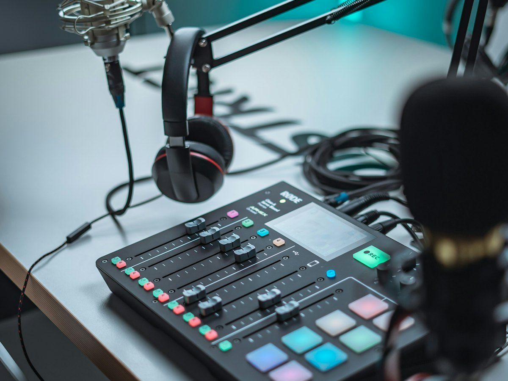

About us
Five students,
one microphone.
We're not the voice of the school. We're five people with a mic, a lunch break, and a lot of questions.

Est. 2022How it started
A club that began as a complaint.
Between the Bells started in September 2022, when two juniors got tired of hearing adults describe student life on the morning announcements. They borrowed a mic from the music department, recorded eleven minutes in a storage closet, and played it for six people. Five of them were related.
Three seasons later the show is still made entirely by students — the questions, the recording, the editing, the artwork, the group chat arguments. We've interviewed teachers, alumni, a school board member and one very honest freshman. We've been wrong on air more than once, and corrected ourselves the following week.
The rule has never changed: if it matters to students at Northfield, it belongs in the show.
“No adults write our questions. That's the whole point.”
Amara Diallo, host
What we stand for
Three rules, no exceptions
-
Student voices first
No adults write our questions. Every episode starts with something one of us genuinely wondered about in the hallway.
-
Curiosity over clout
We're not chasing a viral clip. We'd rather have one honest conversation than a hundred hot takes.
-
Everyone gets a seat
If you go to Northfield, you can pitch an episode, sit in on a recording, or just hang out in Room 214 while we work.
The team
Who's behind the mic
How it's made
An episode, in four days
No scripts, no rehearsals. Just a deadline and a shared folder called FINAL-final-v3.
-
Monday
Pitch
Anyone drops a topic in the box outside Room 214. We pick two every other week.
-
Wednesday
Record
One mic, five chairs, zero scripts. We keep the awkward pauses on purpose.
-
Thursday
Edit
Priya cuts it down, adds the music, and argues with the rest of us about the intro.
-
Friday
Publish
It lands here, in the school newsletter, and anywhere you listen to podcasts.
- 24episodes and counting
- 9.4klistens this season
- 5students behind the mic
- 0scripts, on purpose
Get involved
Want to be on the show?
Students, teachers, alumni and anyone with a good story — pitch us an episode. You bring the story, we bring the snacks.